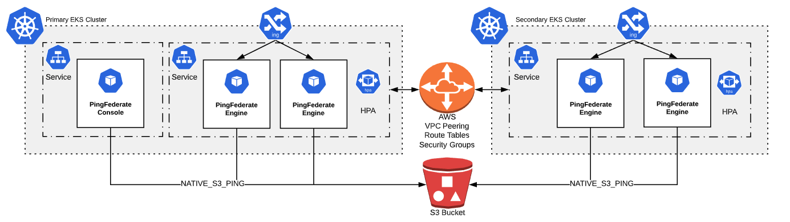

Kubernetes Multi Region Clustering using Native S3 Ping ¶
This document is specific to dynamic discovery with NATIVE_S3_PING and is an extension of PingFederate Cluster Across Multiple Kubernetes Clusters. This is the validated approach for PingFederate < 10.2

AWS S3 Prerequisites ¶
- Create an S3 bucket with all appropriate security permissions
- Non-public
- Well scoped security policy, giving permissions to the service accounts running the EKS PingFederate clusters
- Encrypted
Create an S3 bucket ¶
-
In the AWS console, select the S3 service.
-
Select Buckets, and click Create Bucket.
-
Enter a name for the bucket, select a region, and click Next.
-
Enable the
encrypt objectsoption, and any other options you need. Click Next. -
Select Block All Public Access, and click Next.
-
Click Create Bucket.
-
Select the bucket you just created from the displayed list. A window will open. Click Copy Bucker ARN, and retain this information for your security policy.
-
Click on your bucket to open it, and click Permissions --> Bucket Policy.
-
Use either the policy generator, or manually assign a security policy for the bucket that assigns the cluster user accounts these permissions:
-
GetBucketLocation
-
ListBucket
-
DeleteObject /*
-
GetObject /*
-
PutObject /*
The resource for GetBucketLocation and ListBucket is slightly different than the object permissions. The resource for GetBucketLocation and ListBucket is just the bucket ARN, but for the 3 object permissions, you must add “/*” on the end.
-
What You'll Do ¶
You will deploy a multi-region adaptive Pingfederate cluster across multiple AWS EKS regional clusters.
The kustomization.yaml in the 'engines' and 'admin-console' directories build on top of the standard DevOps PingFederate deployments.
From each of these directories, running kustomize build .
will generate Kubernetes yaml files that include:
-
Two deployments:
pingfederate-adminrepresents the admin console.pingfederaterepresents the engine(s)
-
Two Configmaps. One for each deployment.
- These configmaps are nearly identical, but define the operational mode separately.
-
The configmaps include a profile layer that turns on PingFederate Clustering. This layer simply includes:
- tcp.xml.subst
- run.properties.subst
- cluster-adaptive.conf.subst
-
Two Services:
- One for each of the two deployments (9999 and 9031).
PingFederate Engine Lifecycle ¶
Some features are added to the PingFederate Engine Deployment to support zero-downtime configuration deployments. explanations for these features are stored as comments in pingfederate-engine.yaml.
Running ¶
Clone this repository to get the Kubernetes yaml and configuration files for the exercise, then:
-
Bring up the admin console in the first Kubernetes cluster:
cd admin-console- Modify the 'env_vars.pingfederate-admin' file to include the name of the AWS S3 bucket, and the region of the S3 bucket to be used for the cluster list, as well as the appropriate region for adaptive clustering (PF_NODE_GROUP_ID)
kustomize build . | kubectl apply -f - -
Wait for the pingfederate-admin pod to be running, then validate you can log into the console. You can port-forward the admin service and look at clustering via the admin console.
kubectl port-forward svc/pingfederate 9999:9999 -
Bring up one engine in the first Kubernetes cluster:
cd ../engines- Modify the 'env_vars.pingfederate-engine' file to include the name of the AWS S3 bucket, and the region of the S3 bucket to be used for the cluster list, as well as the appropriate region for adaptive clustering (PF_NODE_GROUP_ID)
kustomize build . | kubectl apply -f -- You can watch the admin console to make sure the engine appears in the cluster list. It would also be wise at this point to check the contents of the S3 bucket and make sure that both the IPs for the admin console and the engine node have been successfully written in.
-
Scale up more engines in the first Kubernetes cluster:
kubectl scale deployment pingfederate --replicas=2- Again, validate that any new engines have successfully joined the cluster and written their IP to the S3 bucket
-
Scale up engines in the 2nd Kubernetes cluster:
- Use kubectx to switch context to the 2nd Kubernetes cluster
- Modify the env_vars.pingfederate-engine file to include the second region for adaptive clustering (PF_NODE_GROUP_ID)
kustomize build . | kubectl apply -f - kubectl scale deployment pingfederate --replicas=2- Again, validate that any new engines have successfully joined the cluster and written their IP to the S3 bucket
Cleanup Second Cluster (Engines Only) ¶
kubectl scale deployment/pingfederate --replicas=0
cd engines
kustomize build . | kubectl delete -f -
Cleanup First Cluster (Engines & Admin) ¶
kubectx <first cluster>
kubectl scale deployment/pingfederate --replicas=0
kubectl scale deployment/pingfederate-admin --replicas=0
kustomize build . | kubectl delete -f -
cd ../admin-console
kustomize build . | kubectl delete -f -